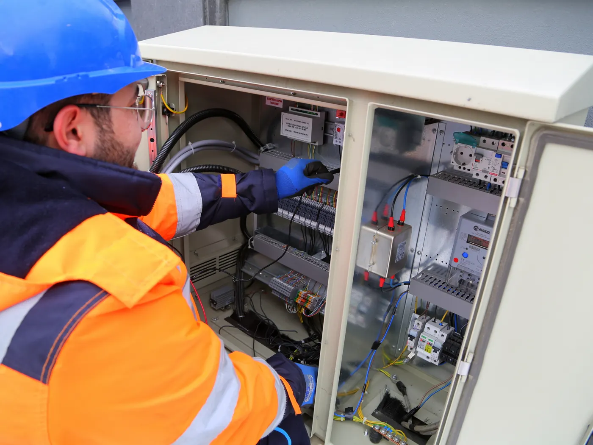

Nuestro fuerteInstalación completa
Vamos, medimos el perímetro y te decimos cuántos postes y cuántos hilos lleva antes de cotizar. Después lo instalamos entero y lo dejamos energizado, probado y explicado.
- Postes y ménsulas anclados al muro
- Aisladores en cada hilo
- De 3 a 5 hilos de acero tensados
- Energizador, tablero y llave de corte
- Sirena y cartel reglamentario